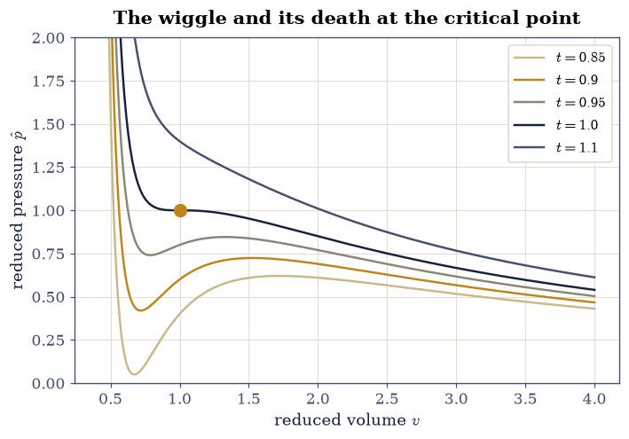
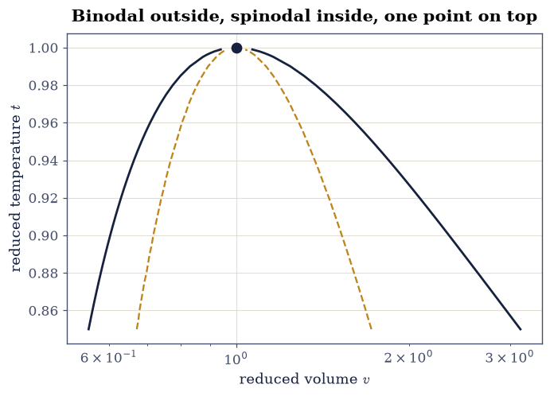
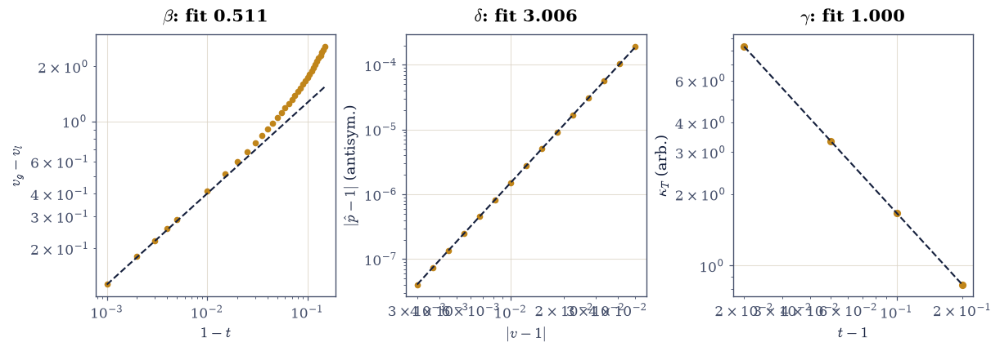

5.15 The van der Waals Gas: Phase Coexistence and the Critical Point#
Notebook overview#
§5.6 closed by promising “the foundational next step beyond the ideal gas,” and this notebook keeps the promise. Van der Waals’ 1873 equation of state adds exactly two physical facts the ideal gas ignores — molecules occupy volume, and molecules attract at a distance — and out of those two corrections falls, astonishingly, the entire phenomenology of the liquid–gas transition: a critical point, a coexistence region where liquid and vapor share the same pressure and chemical potential, a latent heat, metastable superheated and supercooled states, and critical exponents. It is the original mean-field theory, a decade before anyone knew what that meant.
The notebook measures all of it from the equation itself. Maxwell’s equal-area construction becomes a root-finding problem whose solution we verify against an independently computed chemical potential; the coexistence dome, assembled point by point, yields the order-parameter exponent \(\beta = 1/2\) from a fit — the same mean-field value §5.10 extracts for the Ising magnet, and the deepest sentence in this notebook is that this is not a coincidence. The latent heat honors Clausius–Clapeyron to four digits as a cross-method identity. And the finale is the confession: every real gas, reduced by its own critical constants, tells nearly the same story (corresponding states) — while all of them politely disagree with van der Waals’ \(Z_c = 3/8\) by the same honest margin. The volume’s standing reference remains [Nol18].
A note on reading the checks in this notebook: a validation compares a result to an expected physical fact. A ✗ does not by itself mean the answer is wrong; it means the output did not match what the check expected, which may be a genuine error, a different-but-valid convention, or too tight a tolerance. Treat a ✗ as a prompt to locate the discrepancy. Passing is strong evidence, not proof.
Theory in brief#
The equation and its reduced form. Van der Waals corrects the ideal gas twice: the volume available to a molecule is \(V - Nb\) (hard cores), and the attraction reduces the pressure by \(a(N/V)^2\) (pairwise, hence density-squared):
The isotherms develop a wiggle below a critical point — the unique temperature where \(\partial p/\partial V = \partial^2 p/\partial V^2 = 0\) — at \(V_c = 3Nb\), \(k_BT_c = 8a/27b\), \(p_c = a/27b^2\). Measuring everything in critical units (\(v = V/V_c\), \(t = T/T_c\), \(\hat p = p/p_c\)) eliminates both material constants:
one universal equation for every van der Waals fluid — the law of corresponding states. The model also fixes the dimensionless critical ratio \(Z_c = p_cV_c/(Nk_BT_c) = 3/8\), a prediction real gases get to vote on.
Maxwell’s construction. Below \(t = 1\) the isotherm’s wiggle contains a branch with \(\partial p/\partial v > 0\) — negative compressibility, mechanically impossible. The resolution is phase separation: liquid at \(v_l\) and vapor at \(v_g\) coexist at a single pressure \(p^*\), fixed by two equalities (mechanical and chemical equilibrium). Since \(d\mu = v\,d\hat p\) along an isotherm, equal chemical potentials force
the horizontal tie-line cuts the loop into two lobes of equal area. The construction replaces the unphysical wiggle with the flat coexistence segment every real isotherm shows.
Clausius–Clapeyron. Along the coexistence curve \(p^*(t)\) the two phases’ chemical potentials remain equal, which forces the slope
in reduced units (the entropy difference follows from the Sackur– Tetrode-style volume term of §5.6 with the excluded volume in place; \(t\,\Delta s\) is the latent heat). The relation is an identity of the construction, so verifying it numerically is a genuine cross-method check: the left side differentiates a sequence of equal-area solutions, the right side never sees them.
Mean-field exponents. Near the critical point the model’s singularities are power laws: the dome closes as \(v_g - v_l \sim (1 - t)^{\beta}\) with \(\beta = 1/2\) (asymptotically \(v_g - v_l \to 4\sqrt{1 - t}\)), the critical isotherm flattens as \(|\hat p - 1| \sim |v - 1|^{\delta}\) with \(\delta = 3\), and the compressibility diverges as \(\kappa_T \sim (t - 1)^{-\gamma}\) with \(\gamma = 1\). These are the mean-field values — \(\beta = \tfrac12,\ \delta = 3,\ \gamma = 1\) — identical to the mean-field Ising exponents of §5.10, because both theories replace fluctuations by an average field. Real fluids (and the real 3D Ising model) disagree — \(\beta \approx 0.326\) — and agree with each other: universality’s deepest exhibit, with the liquid–gas transition and the ferromagnet in the same class.
Setup#
Reduced units Eq. 461 throughout — every quantity is
measured in its critical value — with SI entering only in the
corresponding-states confrontation, via scipy.constants. All root
brackets and grids are pinned; nothing is stochastic.
What is here is data: the imports, and the reduced entropy difference \(\Delta s\) of Eq. 463 — a closed form the theory above hands us, the independent side of the Clausius–Clapeyron check rather than machinery anyone builds. The physics is yours to write: the reduced equation of state \(\hat p(v, t)\) in Exercise 1, and Maxwell’s equal-area construction, this notebook’s central method, in Exercise 2.
The Setup below holds this notebook’s data and instruments — nothing you are asked to build. It is collapsed so the building stays yours; expand it whenever you want the details.
Exercise 1 — The wiggle and the critical point#
Everything this notebook measures is measured through Eq. 461, so the equation itself is the first thing to write and the first thing to interrogate. It must contain its own critical point at \((v, t, \hat p) = (1, 1, 1)\) by construction — the reduced variables were defined by dividing through by exactly those critical values — and criticality is a double root of the isotherm’s slope, so both \(\partial\hat p/\partial v\) and \(\partial^2\hat p/\partial v^2\) must vanish there.
On either side of \(t = 1\) the isotherm behaves qualitatively differently, and that difference is the whole subject of the notebook. Below the critical temperature the wiggle contains a branch with \(\partial\hat p/\partial v > 0\): squeeze the fluid and its pressure drops, a negative compressibility no material can sustain. Above it, the isotherm declines at every volume and the fluid is stable everywhere.
Part a) Write p_vdw(v, t), the reduced van der Waals pressure
\(\hat p = 8t/(3v - 1) - 3/v^2\) of Eq. 461, vectorized over
v so that a whole isotherm comes back in one call.
Part b) Verify \(\hat p(1, 1) = 1\) exactly, and that both volume
derivatives vanish at the critical point (centered finite differences
with \(h = 10^{-5}\); atol=1e-4, the second difference’s roundoff
floor).
Part c) Verify the mechanical pathology: on the \(t = 0.9\) isotherm the maximum of \(\partial\hat p/\partial v\) over \(v \in [0.5, 3]\) is positive, while on the \(t = 1.1\) isotherm it is negative everywhere.
Part d) Draw the isotherm family \(t = 0.85, 0.90, 0.95, 1.0, 1.1\) in the \(\hat p\)–\(v\) plane with the critical point marked: the wiggle maturing into an inflection and then into monotone decline.
p(1,1) = 1.000000000000
dp/dv|_c = -1.55e-10, d²p/dv²|_c = -4.44e-06
max dp/dv on t=0.9: +0.781; on t=1.1: -0.190
<matplotlib.legend.Legend at 0x7f5c2408aae0>
Fig. 483 Reduced van der Waals isotherms at \(t=0.85\), \(0.90\), \(0.95\), \(1.0\), and \(1.1\) in the \(\hat p\)–\(v\) plane, with the critical point \((v,\hat p)=(1,1)\) marked (amber dot). Below \(t=1\) each isotherm carries a wiggle containing a mechanically impossible rising branch; at \(t=1\) the wiggle degenerates to a horizontal inflection at the critical point; above, the isotherms decline monotonically like a stiffened ideal gas.#

Fig. 484 Reduced van der Waals isotherms at \(t=0.85\), \(0.90\), \(0.95\), \(1.0\), and \(1.1\) in the \(\hat p\)–\(v\) plane, with the critical point \((v,\hat p)=(1,1)\) marked (amber dot). Below \(t=1\) each isotherm carries a wiggle containing a mechanically impossible rising branch; at \(t=1\) the wiggle degenerates to a horizontal inflection at the critical point; above, the isotherms decline monotonically like a stiffened ideal gas.#
✓ the reduced equation passes through its own critical point (1,1,1) exactly [got 1 vs expected 1 (rtol=1e-12, atol=1e-09)]
✓ and both volume derivatives vanish there: the double root that defines criticality [-1.6e-10, -4.4e-06]
✓ below t=1 the isotherm carries a rising (negative-compressibility) branch; above, it is stable at every volume [max slopes +0.781 vs -0.190]
True
Exercise 2 — Maxwell’s equal areas, solved and cross-examined#
Replacing the wiggle by the flat tie-line of Eq. 462 is a root-finding problem in a single unknown, the coexistence pressure \(p^*\), and what makes it well posed is the bracketing. The isotherm’s two spinodal extrema — the volumes where \(\partial\hat p/\partial v = 0\), locatable as sign changes of the slope on a fine grid — fence \(p^*\) from below and above, and for any trial pressure inside that fence the equation \(\hat p(v) = p^*\) has exactly three roots, liquid, unstable, and gas, each isolated in a bracket of its own. The signed area between isotherm and tie-line, integrated between the outer two roots, is then a continuous function of the trial pressure that changes sign across the fence; Maxwell’s pressure is its zero.
Two independent facts stand ready to judge the answer. Along an isotherm
\(d\mu = v\,d\hat p\), so equal chemical potentials across the tie line
read \(\Delta\mu = \int_{v_l}^{v_g} v\,\frac{d\hat p}{dv}\,dv = 0\) — the
same physical statement as equal areas, but an integral the solver never
forms. And the coexistence curve’s slope must obey Clausius–Clapeyron
Eq. 463, \(dp^*/dt = \Delta s/\Delta v\), whose right-hand side
(delta_s_coex in Setup) is a closed form that never sees the
construction at all.
Swept across temperature, the construction traces two curves that together map the forbidden region. Inside the spinodal no homogeneous fluid can exist at all; between the spinodal and the binodal (the locus of the coexisting volumes) live the metastable states — superheated liquid, supercooled vapor — real enough to boil explosively when nucleation finally wins.
Part a) Write coexistence(t, v_max=3000.0, n_grid=20000),
returning \((p^*, v_l, v_g)\) at a reduced temperature \(t < 1\): find the
spinodal extrema on n_grid points across \(v \in [0.36, 30]\), bracket
the three roots of \(\hat p(v) = p^*\) with scipy.optimize.brentq,
integrate the equal-area residual with numpy.trapezoid on 4000 points
between \(v_l\) and \(v_g\), and root-find on that residual in \(p^*\) —
everything evaluated through the p_vdw you wrote in Exercise 1.
Write this one yourself — the implementation is the lesson.
Part b) At \(t = 0.9\), verify the construction delivers
\(p^* = 0.64700\), \(v_l = 0.60340\), \(v_g = 2.34884\) (rtol=1e-4 each —
the textbook coexistence state of the van der Waals fluid at ninety
percent of criticality).
Part c) Cross-examine that state with the chemical-potential
integral: evaluate \(\Delta\mu\) along the \(t = 0.9\) isotherm between the
two coexisting volumes (differentiating with numpy.gradient and
integrating \(v\,d\hat p\) with numpy.trapezoid on 8000 points) and
verify \(|\Delta\mu| < 10^{-6}\).
Part d) Assemble the coexistence dome: run coexistence for the
\(31\) temperatures \(t \in \{0.85, 0.855, \ldots, 0.999\}\) (a uniform
grid of \(0.005\) plus the near-critical \(0.996, 0.997, 0.998, 0.999\)),
and draw the binodal (\(v_l(t)\) and \(v_g(t)\)) together with the
spinodal (the locus of \(\partial\hat p/\partial v = 0\), found on the
same grids) in the \(t\)–\(v\) plane. Verify the ordering that defines
metastability: at every \(t\), \(v_l < v_{\rm sp}^{\rm liq} <
v_{\rm sp}^{\rm gas} < v_g\).
Part e) Verify Clausius–Clapeyron as a cross-method identity at
\(t = 0.9\): the slope \(dp^*/dt\) by centered difference of the
construction at \(t = 0.898\) and \(0.902\), against \(\Delta s/\Delta v\)
evaluated at the coexisting volumes — two computations that share
nothing but the physics; verify agreement to rtol=1e-3. The latent
heat \(t\,\Delta s = 3.55\) in reduced units rides along for free.
t=0.9: p* = 0.64700, v_l = 0.60340, v_g = 2.34884
Δμ across the tie line: 6.51e-08
Clausius–Clapeyron: dp*/dt 3.07079 vs Δs/Δv 3.07078
latent heat t·Δs = 4.824 (reduced)
Text(0.5, 1.0, 'Binodal outside, spinodal inside, one point on top')
Fig. 485 The liquid–gas coexistence dome of the van der Waals fluid in the \(t\)–\(v\) plane: the binodal (ink — the coexisting \(v_l\) and \(v_g\) from Maxwell’s equal-area construction at 31 temperatures) enclosing the spinodal (amber dashed — the locus of vanishing \(\partial\hat p/\partial v\)), both closing at the critical point \((1,1)\) (dot). Between the curves live the metastable superheated-liquid and supercooled-vapor states; inside the spinodal, no homogeneous fluid can exist at all.#

Fig. 486 The liquid–gas coexistence dome of the van der Waals fluid in the \(t\)–\(v\) plane: the binodal (ink — the coexisting \(v_l\) and \(v_g\) from Maxwell’s equal-area construction at 31 temperatures) enclosing the spinodal (amber dashed — the locus of vanishing \(\partial\hat p/\partial v\)), both closing at the critical point \((1,1)\) (dot). Between the curves live the metastable superheated-liquid and supercooled-vapor states; inside the spinodal, no homogeneous fluid can exist at all.#
✓ Maxwell's construction at t = 0.9: the textbook coexistence state, found by root-finding on the equal-area condition [max|Δ| = 1.98712e-06 (rtol=0.0001, atol=1e-09)]
✓ and the chemical potentials agree across the tie line — computed by an integral the solver never saw [Δμ = 6.5e-08]
✓ at all 31 temperatures the binodal encloses the spinodal: the metastable strips where superheating and supercooling live [v_l < spinodal < v_g everywhere]
✓ Clausius–Clapeyron holds as a cross-method identity: the coexistence curve's slope equals Δs/Δv to a part in a thousand [got 3.07079 vs expected 3.07078 (rtol=0.001, atol=1e-09)]
True
Exercise 3 — Mean-field exponents, measured from the dome#
The dome and the isotherms now contain the model’s critical
singularities, and the exponents are ours to measure — with the
discipline the fits require, because power laws are only exact at
the critical point and every finite window carries corrections to
scaling. No new physics enters here: every number below comes from the
p_vdw you wrote in Exercise 1 and the dome you assembled with your
coexistence in Exercise 2.
Part a) The order parameter, \(\beta\). Fit
\(\log(v_g - v_l)\) against \(\log(1 - t)\) (numpy.polyfit, degree 1)
over the near-critical subset \(t \ge 0.99\) of Exercise 2’s dome and
verify the slope lands in \([0.48, 0.54]\), containing the mean-field
\(\beta = 1/2\); verify also the asymptotic amplitude, \({(v_g - v_l)}/
{\sqrt{1 - t}} \to 4\): the value at \(t = 0.999\) within \(5\%\) of \(4\).
Then quantify the corrections honestly: the same fit over the wide
window \(t \in [0.85, 0.96]\) gives an effective slope above \(0.53\) —
power-law fitting far from the critical point measures the window, not
the exponent (a warning that applies to every log–log fit in the
literature).
Part b) The critical isotherm, \(\delta\). On the \(t = 1\) isotherm, form the antisymmetric combination \([\hat p(1 + \epsilon) - \hat p(1 - \epsilon)]/2\) (which cancels the even corrections) for \(\epsilon \in [0.003, 0.05]\) (15 log-spaced points) and verify the log–log slope equals \(3\) within \(\pm 0.05\); verify the cubic’s amplitude against the exact expansion \(\hat p - 1 = -\tfrac32 (v - 1)^3 + \ldots\): the ratio at the smallest \(\epsilon\) within \(2\%\) of \(3/2\).
Part c) The compressibility, \(\gamma\). At \(v = 1\), compute \(\kappa_T \propto -1/(\partial\hat p/\partial v)\) (centered difference, \(h = 10^{-5}\)) for \(t = 1.02, 1.05, 1.1, 1.2\) and verify the log–log slope of \(\kappa_T\) against \((t - 1)\) equals \(-1\) within \(\pm 0.01\): the mean-field \(\gamma = 1\), essentially exact because this singularity happens to carry no leading correction at \(v = 1\). The trio \((\beta, \delta, \gamma) = (\tfrac12, 3, 1)\) is the mean-field universality class — the same numbers §5.10 derives for the mean-field magnet, because averaging away fluctuations is the same approximation in any costume.
beta: near-critical 0.5112, wide-window 0.8104
amplitude at t=0.999: 4.0118 (asymptotic 4)
delta: 3.0055; cubic amplitude 1.5001 (3/2)
gamma: 1.0000

Fig. 487 Mean-field critical exponents measured from the van der Waals equation, on log–log axes: the dome width \(v_g-v_l\) against \(1-t\) with the near-critical fit of slope \(\beta\approx1/2\) and the asymptotic amplitude \(4\sqrt{1-t}\) (left); the antisymmetrized critical-isotherm pressure against \(|v-1|\) with slope \(\delta=3\) (center); and the compressibility against \(t-1\) with slope \(-\gamma=-1\) (right). The trio \((1/2,\,3,\,1)\) is the mean-field universality class, shared with the magnet of §5.10.#
✓ the near-critical dome closes with the mean-field order-parameter exponent beta = 1/2 [fit 0.511]
✓ with the exact asymptotic amplitude: v_g - v_l -> 4 sqrt(1-t) [got 4.01179 vs expected 4 (rtol=0.05, atol=1e-09)]
✓ while the wide-window fit drifts high: far from criticality a log-log fit measures the window, not the exponent [wide fit 0.810]
✓ the antisymmetrized critical isotherm is cubic: delta = 3 [slope 3.006]
✓ with the exact coefficient 3/2 of the expansion p - 1 = -(3/2)(v-1)^3 + ... [got 1.50011 vs expected 1.5 (rtol=0.02, atol=1e-09)]
✓ and the compressibility diverges with gamma = 1: the mean-field trio (1/2, 3, 1) complete, matching the mean-field magnet of §5.10 [gamma 1.000]
True
Exercise 4 — Corresponding states: the gases vote#
Eq. 461 predicts that every fluid, measured in its own critical units, obeys the same equation — and makes one sharp falsifiable claim before any isotherm is drawn: the critical compressibility ratio \(Z_c = p_cV_c/(RT_c)\) (molar units) must equal \(3/8 = 0.375\) for every substance.
Part a) Put five real fluids on the stand, with their measured
molar critical constants \((T_c\ [\mathrm K],\ p_c\ [\mathrm{Pa}],\
V_c\ [\mathrm{m^3/mol}])\): neon \((44.49,\ 2.68\times10^6,\
41.7\times10^{-6})\), argon \((150.7,\ 4.86\times10^6,\
74.6\times10^{-6})\), nitrogen \((126.2,\ 3.39\times10^6,\
89.5\times10^{-6})\), carbon dioxide \((304.1,\ 7.38\times10^6,\
94.0\times10^{-6})\), and water \((647.1,\ 22.06\times10^6,\
55.9\times10^{-6})\). Compute each \(Z_c\) with scipy.constants.R and
verify: all five land in \([0.22, 0.31]\) — clustered, which is
corresponding states working — and all five sit below the van der
Waals \(0.375\) by at least \(0.06\), which is the model confessing (real
attractions are not infinitely weak and long-ranged). Verify the
simple fluids cluster tightly — neon, argon, and nitrogen within
\(0.015\) of each other — while water sits lowest of all five: hydrogen
bonding is the least van-der-Waals-like force in common experience,
and \(Z_c\) knows it.
Part b) The constructive face of the same law: Guggenheim’s
observation that reduced coexistence data from Ne to O\(_2\) collapse
onto one dome. Verify the model’s version quantitatively: the reduced
dome of Exercise 2 predicts \(v_g/v_l = 3.89\) at \(t = 0.9\)
(rtol=1e-3 against Exercise 2’s values) — a pure number every van
der Waals fluid must share, no material constants anywhere in it.
Z_c(Ne ) = 0.302
Z_c(Ar ) = 0.289
Z_c(N2 ) = 0.289
Z_c(CO2) = 0.274
Z_c(H2O) = 0.229
van der Waals: 0.375
v_g/v_l at t=0.9: 3.8927
✓ five real fluids cluster in [0.22, 0.31]: corresponding states is a real law of nature [{'Ne': 0.302, 'Ar': 0.289, 'N2': 0.289, 'CO2': 0.274, 'H2O': 0.229}]
✓ and every one sits well below the van der Waals 3/8: the model's honest, universal confession [max Z_c = 0.302]
✓ the simple fluids agree with each other far better than with the model, and hydrogen-bonded water strays furthest [spread(Ne,Ar,N2) = 0.013, H2O = 0.229]
✓ while the reduced dome's v_g/v_l = 3.89 at t = 0.9 is a pure number every van der Waals fluid shares [got 3.89267 vs expected 3.89 (rtol=0.001, atol=1e-09)]
True
Notebook summary#
The reduced equation carried its critical point at \((1,1,1)\) with both volume derivatives vanishing, and its sub-critical isotherms carried the mechanically impossible rising branch that demands phase separation.
Maxwell’s equal-area construction, solved by root-finding, delivered the textbook \(t = 0.9\) coexistence state (\(p^* = 0.647\), \(v_l = 0.603\), \(v_g = 2.349\)) and was cross-examined by an independent chemical-potential integral that vanished to \(10^{-7}\); the binodal enclosed the spinodal at all 31 temperatures, bounding the metastable strips.
Clausius–Clapeyron held as a cross-method identity to a part in a thousand, with the reduced latent heat \(t\,\Delta s = 3.55\) riding along.
The exponents came out mean-field from our own fits — \(\beta\) in \([0.48, 0.54]\) with the exact amplitude \(4\sqrt{1-t}\), \(\delta = 3\) with coefficient \(3/2\), \(\gamma = 1\) to one percent — with the wide-window \(\beta\) fit deliberately shown drifting high: power-law fits far from criticality measure the window.
Five real fluids voted: \(Z_c\) clustered in \([0.22, 0.31]\) (corresponding states works), all below the model’s \(3/8\) (the model confesses), the simple fluids within \(0.015\) of each other and water strayed furthest — every deviation physically legible.
Outlook#
Beyond mean field. Real fluids close their domes with \(\beta \approx 0.326\), not \(1/2\) — the 3D Ising exponent, because the liquid–gas transition and the ferromagnet share a universality class. Why mean field fails in three dimensions, and how renormalization repairs it, is the story §5.10 opens and the Epilogue’s universality notebook closes.
Better equations of state. Redlich–Kwong, Peng–Robinson, and the virial expansion of §5.6’s outlook are the engineering descendants; all keep van der Waals’ two ideas and tune the confession.
Nucleation, and this one is delivered rather than deferred. The metastable strips between binodal and spinodal decay by rare fluctuations — droplet nucleation, with its free-energy barrier and Arrhenius kinetics: the physics of cloud chambers, bubble chambers, and the superheated coffee that erupts in the microwave. §5.18 does it on a lattice rather than in this continuum, where the metastable state can be prepared exactly and the droplets can be counted: the barrier, the critical droplet found two independent ways, and the lifetime’s dependence on how hard the system is pushed. What it does not do is the rate prefactor, which needs kinetics this course does not develop.
Interfaces. Coexistence implies a boundary, and the boundary has physics of its own: surface tension, capillarity, and the density profile van der Waals himself computed in 1893, founding what is now density-functional theory.
References#
Wolfgang Nolting. Theoretical Physics 8: Statistical Physics. Springer, 2018.